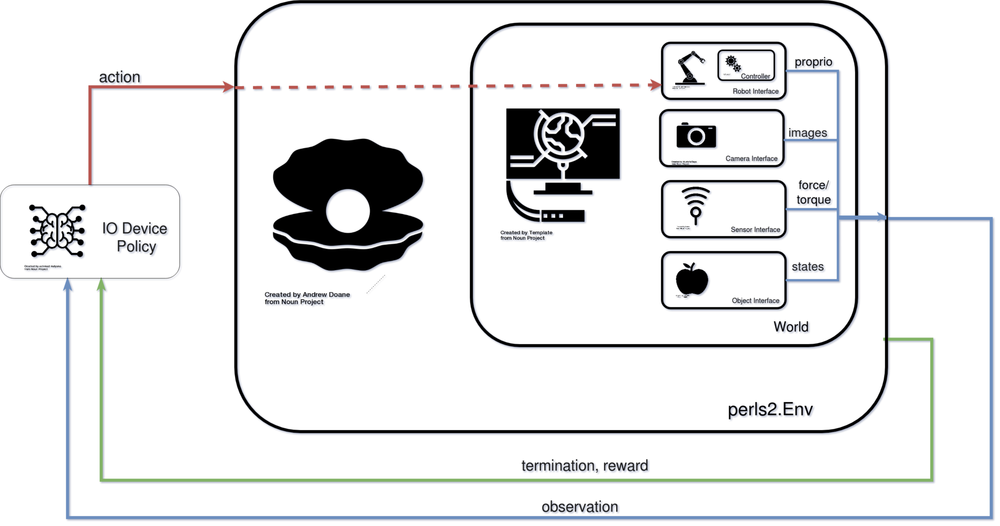

Environments¶
Environments are used to encompass all aspects for a robot learning experiment. They contain a perls2.World, which provides an interface to a simulation (even the real world one we live in). Environments also contain definitions for tasks, and other necessary parameters for reinforcement learning pipelines.
These include:
observations
rewards
termination conditions
action definitions.

The env.step() function defines how the environment executes changes from a policy action. It produces observations for the environment state resulting from this action.
These conventions are adopted from openAI.gym and widely used in robot learning.
Hierarchy¶
Users define their own environment class by inheriting the abstract Environment (env.py). All perls2 environments use the OpenAI gym.Env as a superclass.
Attributes:¶
-config: dict
Config files contain parameters to create an arena, robot interface, sensor interface and object interface. They also contain specs for learning, simulation and experiment setup.
-world: World
Object describing the simulation or reality in which contains an arena, robot interface, sensor interface and object interface.
The world does not contain any information about observations, actions or task descriptions.
To streamline the setup of the experiment, worlds are typically generated from the configuration file using the world_factory.
This ensures that the appropriate robot, sensor and object interfaces are quickly generated. The enclosing Env is given direct
access to the world’s attributes. i.e.
env.robot_interface = env.world.robot_interface
-arena: Arena Manages the sim by loading models (in both sim/real envs) and for simulations, randomizing objects and sensors parameters
-robot_interface: RobotInterface Communicates with robots and executes robot commands.
-sensor_interface: SensorInterface Retrieves sensor info and executes changes to params
-object_interface: ObjectInterface Only for Sim environments– retrieves object info and excecutes changes to params
Public methods¶
(similar to openAI gym)
-step: Step env forward and return observation, reward, termination, info. Not typically user-defined but may be modified.
-reset: Reset env to initial setting and return observation at initial state. Some aspects such as randomization are user-defined
Notes:¶
Arenas and interfaces are, by default, initialized specific to the World of the env i.e. BulletWorld creates a BulletArena and Bullet_Robot/Sensor/Object_Interfaces.
For any env, users need to set the following methods:
-reset: Define aspects reset environment after episode completion. This may include randomization of objects or camera intrinsics or extrinsics -get_observation: Define the observation returned by env upon reset, step -rewardFunction: Compute the reward received by the agent given current state of the environment -exec_action: Define how action received by agent should be executed.